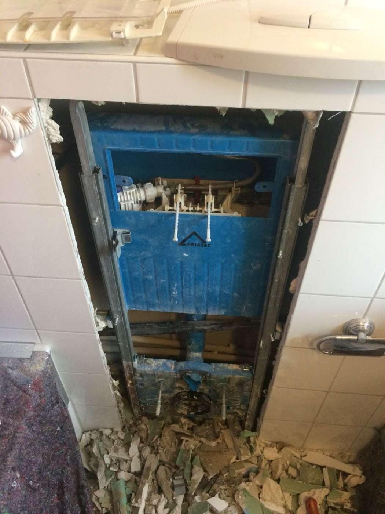

Grijanje
01- Centralno grijanje – radijatori, razvodi, zamjena i ugradnja radijatora
- Podno grijanje – cijevi na čepastim pločama, u estrihu
- Kotlovnice – nove i modernizacija postojećih, razdjelnici grijanja
- Dizalice topline
- Peći na pelete i drva
Popravci, adaptacije, novogradnja i hitne intervencije. Ispod su sve djelatnosti koje PIPE PLAN navodi i fotografije radova iz objavljenih referenci.
Stari ugradbeni vodokotlić izvađen je iz zida i zamijenjen novim, prije zatvaranja zida i postavljanja pločica. Povucite klizač.
095 356 7140

Fotografije iz referenci koje je tvrtka objavila na svom eMajstor profilu: podno grijanje, sanitarije, vodokotlići, adaptacija kupaone i dnevnog boravka.